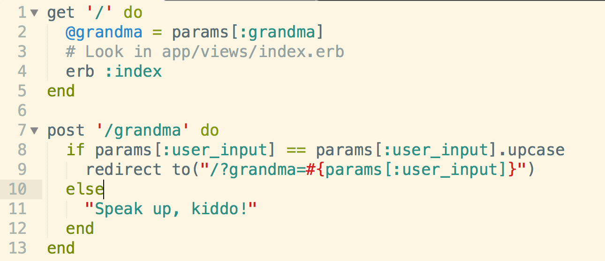
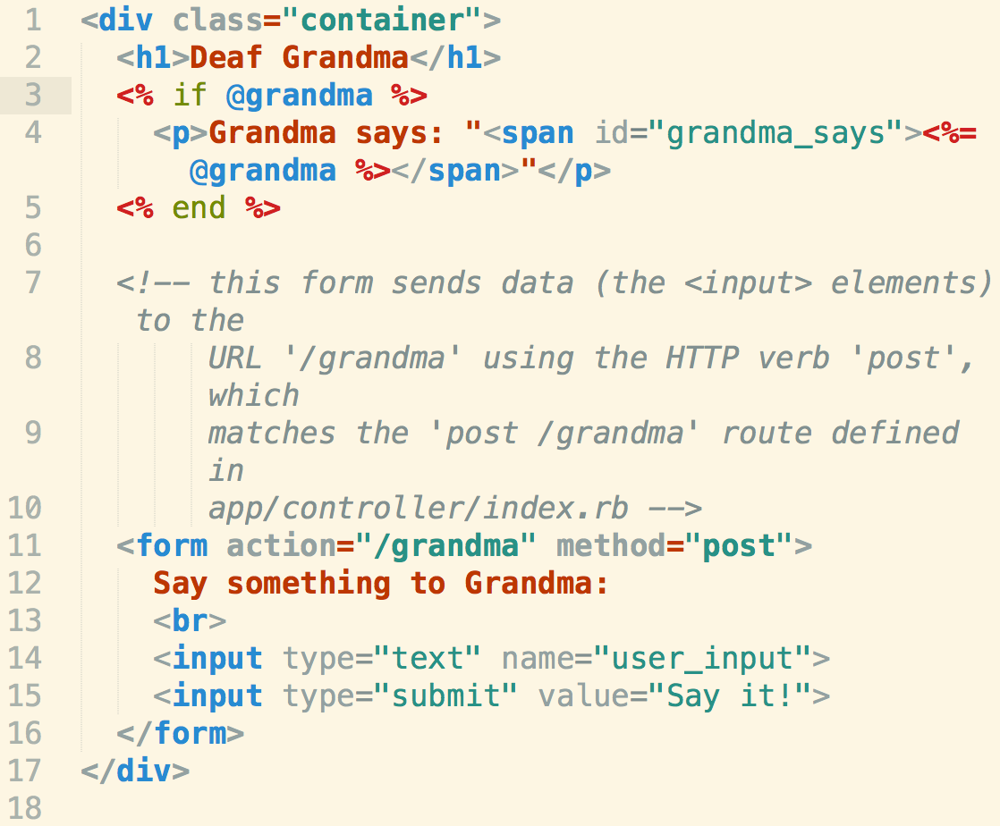

Sinatra and HTTP
Today we were given a challenge to solve deaf grandma via Sinatra and HTTP. I've come to see Sinatra as just a DSL gem, with HTTP routes as its specific language. Let's walk through the process of using HTTP routes considering the user side MVC accordingly.
Step 1: Bundle
The very first thing we start off with is bundle command to load all required gems for this application that are stored in the Gemfile. We aslo have a environment.rb in our config folder to set up links so that we don't have to require/require_relative the most often used gems.
Step 2: Controllers.
As there are no databases in this challenge, we don't have to deal with ORM and setting up migrations. By running the shotgun gem on a sinatra app, you continuously update your local web server.
The user inputs a request into the URL and you need to create the HTTP routes on the server side.(These routes are solely located inside the controller.)
As a user calls the most basic root route '/', he is redirected to a particular view(line 4 sets up an index.erb in the view folder). Line 2 sets up a query string where users can type ?grandma=(whatever) in the URL to use the params[:grandma] (params pass in objects from the URL)
Step 3: Views
The index.erb called on line 4 in controller will take you to a html file that allows ruby within certain symbols (<% %>).
Lines 3-5 in the view allow for Grandma to puts the result of @grandma (or specifically what ?grandma= returns in the URL for the query string.) Line 4 where (Grandma says:) is HTML, the string "" on line 4 is embedded ruby (@grandma)
Line 11 is setting a form to a post route "/grandma". Line 14 is setting a text box to a paraams[:user_input]. Because of line 11 you need to go back to the controller and create a post route '/grandma' to output the params[:user_input]. Back on the controllers file, line 9 where you put redirect to will run your query string.